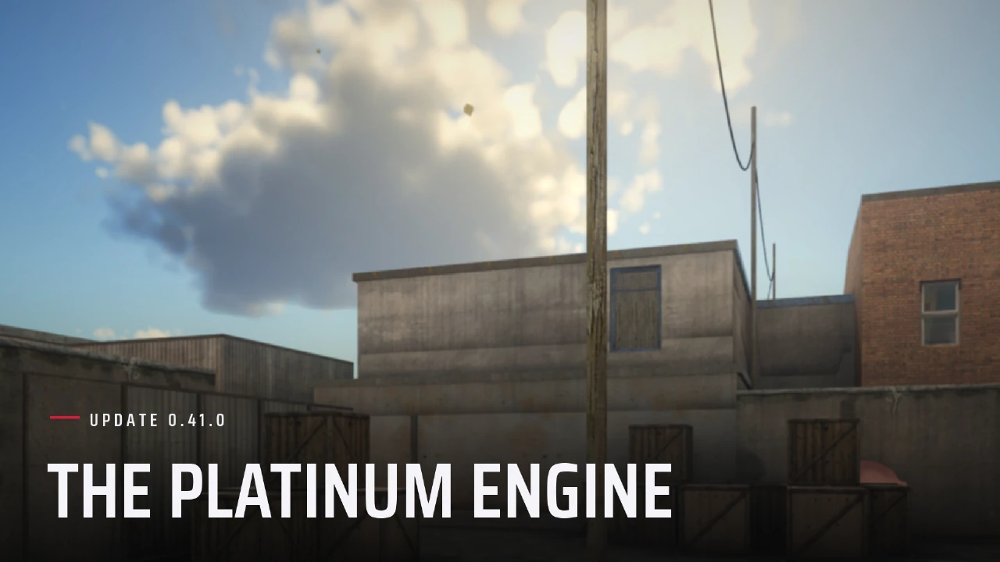
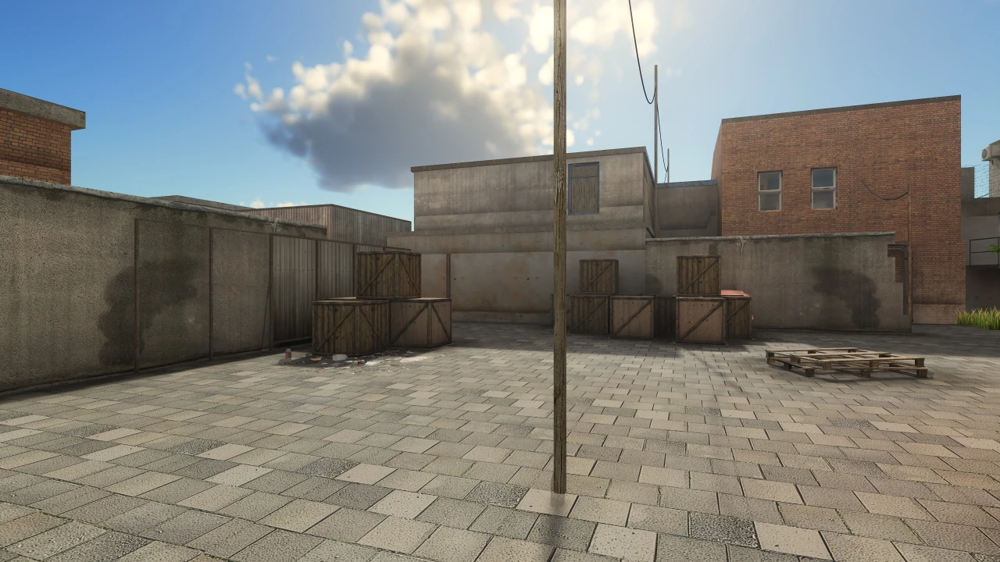
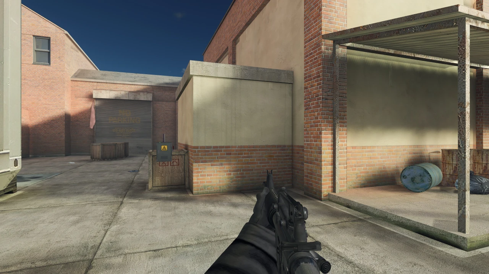

De Platinum Engine
Een levende lucht, zonlicht in realtime, nachten die echt donker zijn, glas dat breekt waar je schiet, raytracing, een vernieuwd grafisch menu, slimmere netcode, party's en nog veel meer. Update 0.41.0 bundelt alles wat we voor 0.40.1, 0.41 en 0.42 gepland hadden in één release. Dit is het volledige verhaal.
Een week geleden schreven we dat 0.40.0 een mijlpaal was, geen eindpunt. Dat meenden we. Terwijl 0.40.0 in de laatste testfase zat, kregen er achter de schermen al drie nieuwe updates vorm: een kleine 0.40.1 met fixes, een 0.41 rond gevoel, geluid en online spelen, en een 0.42 die de tweede grote stap zou zetten om de engine onder TrueCombat: Platinum om te bouwen tot iets nieuws.

We hadden de keuze. Ze de komende weken één na één uitbrengen, of ze tegenhouden en samen uitbrengen. We kozen voor het tweede. Veel van de nieuwe grafische features steunen op elkaar: de lucht stuurt het zonlicht, het zonlicht stuurt de schaduwen, de schaduwen en het weer sturen het water, en de duisternis 's nachts hangt van allemaal af. Ze in stukken uitbrengen zou betekenen dat we een half beeld afleveren. Daarom is 0.41.0 één update met alles erin.
Het is de grootste update die we ooit gemaakt hebben. Deze post is lang omdat er veel te vertellen is, en omdat we willen dat je weet wat eraan komt voordat je het speelt.
Update 0.41.0 zit in de laatste testfase. Alles wat hier beschreven staat, zit in de release. Elk nieuw visueel effect staat standaard aan voor iedereen, Ranked inbegrepen, en bijna elk effect heeft een eigen schakelaar in het nieuwe grafische menu.
De Platinum Engine
TrueCombat: Platinum draait op een engine die begon als ET: Legacy, de opensource-voortzetting van Wolfenstein: Enemy Territory. Het is een opmerkelijke basis: snel, stabiel en gebouwd voor precies het soort strakke, competitieve infanteriegevechten waar dit spel om draait. Ze werd ook ontworpen voor de hardware van twintig jaar geleden.
In plaats van dat weg te gooien en opnieuw te beginnen, besloten we ze stap voor stap te upgraden: behouden wat goed aanvoelt en vervangen wat ons tegenhoudt. Het resultaat noemen we de Platinum Engine. De eerste fase legde de basis in de DirectX 12-renderer. 0.41.0 rondt de tweede fase af, en die ga je zien.
Je merkt het meteen bij het opstarten: voor het Team Terminus-logo speelt nu een korte introkaart van de Platinum Engine. Ze zegt in stilte wat volgens ons de eerlijke omschrijving van deze engine is: een grondig herontworpen evolutie van ET: Legacy. Wil je ze liever overslaan, dan zet één instelling ze uit.
Een moderne renderer-kern
Het meeste werk in deze fase zit waar niemand het ziet. De DirectX 12-renderer bouwt en bewaart zijn shaderpipelines nu op voorhand, zodat de kleine haperingen die je voelde wanneer een effect voor het eerst op een map verscheen na de eerste keer laden verdwenen zijn. Een render graph plant elk frame als geheel, zodat de GPU minder op zichzelf moet wachten. Zwaar werk zoals belichting en de simulatie van deeltjes draait op de compute-wachtrij van de GPU, tegelijk met het tekenen in plaats van erna.
De renderer stapte over op Shader Model 6.6 en kreeg ondersteuning voor mesh shaders, variable rate shading en DirectStorage. Eenvoudig gezegd: dichte geometrie zoals gras wordt op de grafische kaart zelf gemaakt in plaats van er stukje per stukje naartoe gestuurd, delen van het scherm die geen volle detail nodig hebben, zoals snelle bewegingen of diepe schaduw, kosten minder om te tekenen, en textures stromen rechtstreeks van de schijf naar de GPU. Virtual texturing bouwt daarop verder, zodat de grote nieuwe textures in 0.41.0 alleen videogeheugen innemen waar je ze echt kunt zien.
Niets hiervan verandert hoe het spel speelt. Het is wat al de rest in deze post mogelijk maakte.
Een lucht die beweegt
Sinds de eerste release had elke map in Platinum een geschilderde lucht: een afbeelding van wolken die nooit veranderde. Op DirectX 12 is het nu een echte lucht.
Wolken zijn volumetrisch. Ze hebben diepte en volume, de zon belicht ze aan de juiste kant, ze drijven mee met de wind en ze groeien, dunnen uit en veranderen langzaam van vorm in de loop van een ronde. Ze werpen bewegende schaduwen over de map, en het licht op de grond volgt ze: een straat die een minuut geleden in de volle zon lag, wordt donkerder als er een wolk overdrijft en klaart daarna weer op. Waar de wolken openbreken, vallen er zonnestralen door de openingen. Daarboven zit een fysiek correcte atmosfeer, zodat een wazige namiddag de juiste kleur heeft, de horizon echte diepte krijgt en hoge, dunne cirrus op een heldere dag strepen trekt door de lucht.
Weer dat je ziet aankomen
Willekeurig weer kwam er in 0.39.4. In 0.41.0 laat de lucht het eindelijk zien. Regen valt uit de wolken die hem dragen, dus je kunt een bui over de map zien trekken die natte grond achterlaat. Natte grond droogt weer op nadat de regen voorbij is. Sneeuw blijft liggen. Onweer bouwt zich op als hoge buien aan de horizon voordat het aankomt, en bliksem verlicht de hele map voor een fractie van een seconde, schaduwen inbegrepen. Na een onweersbui, met de zon in je rug, zie je misschien een regenboog.
Het weer kan ook tijdens een ronde veranderen. Er kan een weerfront binnenrollen, een heldere ochtend kan betrekken en een storm kan weer wegtrekken. De server beslist wanneer en hoe, zodat elke speler op de server op hetzelfde moment precies dezelfde lucht ziet. Ook de wind is gedeeld: dezelfde windstoten die de wolken voortduwen, buigen het gras, dragen de regen, verplaatsen de rook en laten de bomen zwaaien.
De horizon van elke officiële map is opnieuw getekend in hogere resolutie, zodat de rand van de wereld standhoudt naast de nieuwe lucht.

 0.40.0
0.41.0
0.40.0
0.41.0
Zonlicht in realtime
Het zonlicht op de klassieke maps was gebakken: jaren geleden één keer berekend en als textuur in de wereld geschilderd. Het zag er goed uit, maar het stond stil. Spelers, wapens en alles wat bewoog kregen er alleen een ruwe benadering van, en niets kon ooit veranderen.
In 0.41.0 wordt de zon op DirectX 12 in realtime berekend. We behielden het gebakken weerkaatste licht, dat de maps hun karakter geeft, en vervingen het directe zonlicht door een live versie voor elke pixel op het scherm. Schaduwen hebben zachte randen die zachter worden naarmate ze verder liggen van wat ze werpt, zoals echte schaduwen. Spelers werpen echte schaduwen op muren en vloeren en ontvangen ze ook correct. Je eigen wapen staat nu in hetzelfde licht als de wereld rondom: stap in de schaduw van een gebouw en de schaduw valt over je geweer.
Zonlicht in realtime betekent ook dat het licht kan veranderen. Overdrijvende wolken dimmen het, bliksemflitsen werpen hun eigen schaduwen en rook tussen jou en de zon werpt zelf een schaduw. Schaduwen reiken veel verder dan vroeger, zodat een lange straat haar schaduwen tot helemaal achteraan houdt.

Licht dat een kamer vult
Zonlicht is maar de helft van het verhaal. De andere helft is hoe licht zich verplaatst zodra het aankomt.
Global illumination. Licht weerkaatst nu in realtime. Een muur in de zon gooit warm licht in de kamer ernaast, een rode deur kleurt de vloer ervoor en de flits van een granaat vult een gang in plaats van één plek te verlichten. Een raster van lichtprobes bedekt elke map en past zich aan als het licht verandert, zodat een overdrijvende wolk of een kapotgeschoten lamp ook de kamers eromheen verandert.
Ambient occlusion. Hoeken, naden en de plek waar een muur de vloer raakt worden nu donkerder zoals in het echt, met een moderne techniek die de vorm van de scène veel nauwkeuriger leest dan de oude. Soldaten staan echt op de grond waar ze staan.
Volumetrisch licht en mist. De lucht zelf vangt nu licht. Zonnestralen door een raam, de lichtbundel van een straatlamp in de regen en de gloed van een vuur door rook zijn allemaal echte volumes licht in plaats van platte sprites. Afstand weegt: lange zichtlijnen vervagen in de nevel, boven hete grond trilt de lucht op een zomerse namiddag, en zware regen slokt een gestalte aan het einde van een straat op.
Lampen met schaduwen. Elke lamp op elke officiële map is geplaatst, opgemeten en kreeg een echt licht met echte schaduwen. Tot acht lampen in je buurt werpen tegelijk schaduwen op Ultra, vier op High, en ze houden de kost laag door te onthouden wat niet beweegt.
Ultra RT
Voor grafische kaarten met hardwarematige raytracing voegt 0.41.0 een nieuwe hoogste preset toe: Ultra RT.
Raytracing volgt echte lichtpaden door de scène in plaats van ze te schatten op basis van wat er op het scherm staat. Reflecties tonen wat er echt is, ook dingen buiten je beeld: een speler die achter je de hoek om komt, verschijnt in een etalageruit voordat hij op je scherm verschijnt. Schaduwen van de zon en van lampen worden ook getraced, waardoor ze haarscherp zijn waar voorwerpen de grond raken en natuurlijk zacht verderop. Global illumination gebruikt getracete stralen om te vinden waar licht weerkaatst, wat interieurs merkbaar nauwkeuriger maakt. Een eigen denoiser houdt het resultaat zuiver en stabiel in beweging.
Ultra RT is een keuze, geen vereiste. Elke map, elke modus en elk effect in deze post werkt zonder, en de andere presets werden eerst gebouwd.
Oppervlakken, water en regen
Elk oppervlak in het spel weet nu waaruit het bestaat. Baksteen, beton, hout, metaal, glas, tegels, asfalt, pleister en aarde hebben elk hun eigen fysiek correct materiaal, dat bepaalt hoe ruw ze zijn, hoe ze het licht vangen en wat er gebeurt als ze nat worden.
Reflecties. Screen-space reflecties horen nu bij elk glanzend oppervlak, niet alleen bij plassen. Glas, gepolijste vloeren, natte steen en metaal weerspiegelen de wereld rondom op High en Ultra, met getracete reflecties op Ultra RT.
Regen die intrekt. Als het regent, worden oppervlakken donkerder en beginnen ze te glanzen. Poreuze steen zuigt water op, gladde tegels laten het parelen, en plassen vormen zich waar de grond echt daalt, voor elke officiële map in kaart gebracht vanuit de geometrie van het level. Regendruppels rimpelen in de plassen en lopen langs muren naar beneden. Onder een dak of een diepe overkapping blijft de grond droog, met een zachte rand waar verwaaide regen net onder de dakrand komt. Als de regen stopt, droogt alles de minuten daarna weer op.
Water. De haven van Northport en het kanaal van Lockgate zijn nu echt water: bewegend, weerspiegelend, met de bodem die erdoor breekt, en reagerend als er iets in terechtkomt.
Diepte in elke baksteen. Kasseien, bakstenen muren en ruwe steen hebben nu echte diepte. Parallax en tessellation duwen het oppervlak uit de platte textuur, zodat een bakstenen muur die je in de lengte bekijkt randen heeft die je echt ziet.
Scherpere textures. 165 textures op de officiële maps zijn opnieuw opgebouwd op 2048 pixels, waaronder 48 die nog nooit geremasterd waren, en een optioneel 4K-pakket maakt de 40 grootste grond- en muurtextures nog scherper voor grafische kaarten met geheugen over.
Wanneer de nacht valt
Dit is de feature waar we het meest naar uitkijken, en die waar we het langst aan gewerkt hebben om ze goed te krijgen.
Het tijdstip van de dag hoort nu bij elke ronde, net zoals het weer. Een ronde kan plaatsvinden bij vol daglicht, tijdens het gouden uur, in het koude blauwe licht voor de dageraad of 's nachts. De server bepaalt het, iedereen op de server speelt in hetzelfde licht, en het geldt voor elke modus, Ranked inbegrepen.
En als het nacht is, is het donker. Geen blauwe filter over een map overdag: echte duisternis, waar het enige licht het licht is dat er echt is. Maanlicht, de gloed van de lucht, straatlampen, verlichte ramen, vuur en wat je zelf meebrengt.
We weten wat je denkt, want het was ook onze eerste vraag: wordt het pikdonker? Zelden, en alleen waar het dat in het echt ook zou zijn. Een interieur zonder ramen met de lichten uit, 's nachts, is donker. Een straat onder lampen niet. Meestal kun je zien, en het plezier zit in wat je doet met de plekken waar dat niet lukt.
Licht als wapen
Duisternis werkt alleen als licht deel wordt van het gevecht, dus gaven we beide teams de middelen.
- Lampen en stroom. Lampen kun je kapotschieten, en ze blijven uit. Veel gebouwen hebben een stroomschakelaar: zet hem om en de lichten binnen gaan uit, luid genoeg zodat iedereen in de buurt het hoort. Noodverlichting blijft branden.
- Wapenlamp. Een lamp onder de loop, gratis mee te nemen en snel aan en uit te zetten. Ze verlicht alles waar je op richt en verblindt de speler die je ermee beschijnt. Ze verraadt ook precies waar jij bent.
- Fakkels. Handfakkels branden een halve minuut rood en rokerig. Eén parachutefakkel per team per ronde verlicht van bovenaf een heel stuk van de map.
- Nachtzicht. Nachtzicht neemt een uitrustingsslot in en is beperkt per team. Het maakt het donker groen en zichtbaar, maar heeft een smal blikveld en weinig diepte, het duurt een seconde om het neer te klappen en het wordt volledig overbelicht als een fakkel, een lamp, een flashbang of de wapenlamp van een tegenstander het raakt.
- Mondingsvuur. Elk schot verlicht even de wereld rond de schutter. 's Nachts zie je een vuurgevecht van over de hele map.
Ook je ogen passen zich aan. Stap vanuit een verlichte kamer de nacht in en het duurt een paar seconden voor je weer goed kunt zien. Stap van het donker in het licht en je bent even verblind.
Balans eerst
Toen we dit alles intern voor het eerst lieten zien, was de eerste reactie niet "dat ziet er geweldig uit" maar "dat moet in balans". Dus balans kwam eerst. Elk van deze middelen heeft een prijs en een antwoord. Alles werd afgesteld met een duidelijk doel: een ronde 's nachts moet voor beide kanten even goed te winnen zijn als een ronde overdag, en er moeten verschillende goede manieren zijn om ze te spelen. Bots volgen dezelfde regels: ze zien bij hetzelfde licht als jij, ze gebruiken dezelfde middelen en ze trappen in dezelfde trucs.

Gemaakt om te breken
Glas
Glas in Platinum was vroeger ofwel decoratie, ofwel één breekbaar paneel dat in één stuk verdween. In 0.41.0 is elke echte ruit op elke officiële map een ruit waar je doorheen kunt schieten.
Een kogel laat een gat ter grootte van een kogel achter, omringd door barsten die zich in ringen en lijnen vanaf de inslag verspreiden. Blijf schieten en er komen stukken los die naar beneden vallen. Een granaat laat een gekartelde rand in het kozijn achter. Maak een gat groot genoeg en je kunt erdoor klimmen, en wie tegen een verzwakte ruit sprint of erover springt, breekt ze open. De server beslist over elke breuk, zodat elke speler exact dezelfde gaten op exact dezelfde plekken ziet, en een speler die halverwege de ronde instapt het raam ziet zoals het is. Het glas blijft gebroken tot de map herstart.
Muren, puin en de nasleep
Kogelgaten en schroeiplekken worden nu correct op de vorm van het geraakte oppervlak geprojecteerd en blijven de hele ronde, zodat een gevecht zijn sporen op de muren nalaat. Herhaald vuur op dezelfde plek hakt die in stappen weg. Kisten en planken breken in stukken die passen bij waaruit ze gemaakt zijn: houten planken splijten langs de nerf in latten en splinters, metalen kisten in verbogen platen. De stukken vallen op ieders scherm op dezelfde manier, tuimelen van trappen en worden door voorbijlopende voeten opzij geschopt, maar ze blokkeren nooit je weg.
Na een explosie binnen vallen er stukken pleister van het plafond, hangt er een halve minuut stof in de lucht en tekent roet de muren. De maps zelf zijn ook verouderd: regen heeft strepen op de muren getrokken, vuil verzamelt zich waar muren de grond raken en waterstrepen lopen onder vensterbanken naar beneden.
Wapens die slijten
Elk wapen in eerste persoon heeft nu slijtage aan de randen waar handen en holsters erlangs zouden schuren, vuil in de uithollingen en een fijn laagje stof, voor elke familie wapens anders afgewerkt. Vuur ermee en er bouwt zich roet op rond de monding en de uitwerpopening, ronde na ronde. Lege hulzen hebben nu echte fysica en echt metaal: ze stuiteren, rollen van trappen, vangen het licht van mondingsvuur en blijven de rest van de ronde op de vloer liggen, samen met de lege magazijnen van je herlaadbeurten. Je wapen vangt ook het licht van zijn eigen mondingsvuur.
Rook, schok en slijtage
Rookgranaten zijn nu echte volumes rook, gesimuleerd in plaats van getekend als een handvol sprites. Ze vullen de ruimte waarin ze gegooid worden, rollen om hoeken, drijven mee met de wind en blokkeren het zicht volledig. Mondingsvuur en vuur verlichten ze van binnenuit. Rook ziet er voor elke speler op elke instelling hetzelfde uit.
Onderdrukking heeft meer gewicht. Kogels die langs je hoofd fluiten, vervagen de randen van je zicht en vernauwen je blik even. Een explosie dichtbij overbelicht het scherm, gooit stof rond je op en laat je oren suizen.
Uniformen vertellen het verhaal van een ronde. Soldaten worden stoffig als ze plat gaan liggen, doorweekt in de regen, modderig op natte grond en dragen zichtbare wonden nadat ze geraakt zijn. Aan het einde van een zware ronde zie je wie er in het gevecht stond.
Deeltjes en fysica
In 0.40.0 introduceerden we een nieuw deeltjessysteem. In 0.41.0 verhuisde het naar de grafische kaart, en daarna maakten we het massaal.
Op DirectX 12 worden deeltjes nu op de GPU gesimuleerd, waardoor het spel er honderdduizenden tegelijk kan laten lopen. Explosies gooien op wat ze raken: kluiten aarde en een kolom bruin stof op gras, gruis en grijs stof op asfalt, splinters van hout. Scherven lichten even op terwijl ze vliegen. Bladeren en afval worden meegevoerd door dezelfde wind als al de rest. Deeltjes botsen met de wereld, werpen zachte schaduwen, worden belicht door de nieuwe lampen en mist en gaan vloeiend over van frame naar frame.
Er kwamen veel kleine details mee:
- Kogelinslagen verschillen per materiaal, en sommige effecten blijven hangen: stof blijft zweven, sintels gloeien na, sneeuwwolkjes drijven weg.
- Vuur is nieuw en brandt met echte hittetrilling erboven.
- Kogels en explosies in water gooien opspattend water en nevel op.
- In de regen spatten druppels rond je laarzen als je over harde grond loopt. Sprinten door sneeuw schopt kluiten op.
- Een moment nadat een kogel een stenen muur raakt, loopt er een dun straaltje gruis uit het gat.
- Stofdeeltjes zweven in zonnige kamers, en bladeren en papier schuiven over open terrein.
- Zeilen, luifels, vlaggen en netten in de wereld zijn echte stof die meebeweegt met de wind en reageert op explosies. Ook de kleding van soldaten beweegt: mouwen, broekspijpen en losse riemen zwaaien mee als ze lopen.
Explosiestof is zwaarder dan vroeger en werpt een diepere schaduw. Het ziet eruit zoals een echte explosie eruitziet, ook als dat betekent dat het iemand even verbergt.
Gras, bomen en soldaten
Gras is op DirectX 12 nu echte geometrie, op de grafische kaart gemaakt in dichte, natuurlijke plukken die buigen als je erdoor loopt en daarna terugveren. Bloemen en onkruid breken open terrein op.
Bomen zijn nieuw op Village, met dertien loofbomen, en op Snow, met kale winterbomen. Ze wiegen in de gedeelde wind, laten zonlicht door hun bladeren gloeien en schudden als er in de buurt een explosie afgaat, samen met het gras en de struiken eromheen.
De kijkafstand is groter en de overgang tussen detailniveaus vloeiender, zodat bomen, gras en objecten niet meer in beeld springen terwijl je beweegt.
Soldaten hebben nieuwe huid- en stofshading, met elk deel van een uniform belicht als wat het is: stof, leer, rubber, staal of kunststof. Animaties lopen vloeiender in elkaar over, en voeten staan nu echt op hellingen en trappen in plaats van erboven te zweven of erin weg te zakken.
Camera en fotomodus
De camera gedraagt zich nu meer als een echte lens. Richten over het vizier geeft de wereld achter je vizier een subtiele scherptediepte. Motion blur, afgestemd op een echte camerasluiter, maakt snelle draaibewegingen vloeiender. Felle lichten geven lensflares en vuil op het glas vangt de zon. Elk hiervan heeft een eigen schakelaar.
Voor screenshots is er nu een fotomodus. In replays, op je eigen server of als volledige toeschouwer pauzeer je de actie, beweeg je de camera vrij en stel je lens, focus, diafragma en motion blur in, en dan druk je af. Fotomodus is niet beschikbaar tijdens een live match op een server met andere spelers, zodat hij nooit als voordeel gebruikt kan worden.
Beeldkwaliteit en HDR
Het uiteindelijke beeld gaat nu door een nieuwe pipeline. De scène wordt gerenderd in echt hoog dynamisch bereik, belichting werkt zoals bij een camera, bloom komt van de werkelijke helderheid van een lichtbron, en een nieuwe filmische tooncurve maakt er een beeld van dat detail houdt in zowel heldere luchten als donkere interieurs. Op een HDR-monitor geeft het spel nu echte HDR10 weer, met hooglichten die echt helderder zijn dan de rest van het scherm.
Anti-aliasing en upscaling. Een nieuwe temporele anti-aliasing vervangt multisampling op High: scherper, stabieler en goedkoper. NVIDIA DLSS biedt nu zijn volledige reeks upscalingmodi, en AMD FSR 3.1 is beschikbaar op elke moderne grafische kaart. Dynamische resolutie kan je framerate stabiel houden door tijdens de zwaarste momenten de resolutie licht te verlagen.
Frame generation en latency. Frame generation van zowel DLSS als FSR wordt ondersteund, samen met NVIDIA Reflex en AMD Anti-Lag 2 om de invoervertraging laag te houden.
Een nieuw grafisch menu
Met zoveel nieuwe opties zou het oude grafische menu onder het gewicht bezweken zijn. Dus bouwden we het opnieuw.
Het nieuwe Opties > Graphics is ingedeeld volgens wat een instelling doet, niet volgens waar ze in de engine zit. Elke instelling toont een live voorbeeld van wat ze verandert, en een meter toont hoeveel videogeheugen en prestaties je keuzes kosten voordat je ze toepast. Presets lopen nu van Low tot Ultra RT.
Auto-detect bekijkt je hardware en kiest er de beste instellingen voor. Haalt je pc geen vloeiende framerate, dan verlaagt het eerst resolutie en kwaliteitsstappen en zet het pas een effect uit als het moet, en het vertelt je welk.
Benchmark. Een ingebouwde benchmark volgt een vaste route door Village, in een snelle versie van 20 seconden of een volledige van 60 seconden, en houdt een geschiedenis van je resultaten bij, zodat je precies ziet wat een wijziging deed.
OpenGL en de Low-preset houden de look die je kent uit 0.40.0, zodat oudere machines niet achterblijven.
Geluid dat reist
De audio-engine zette twee grote stappen in deze update.
Ten eerste reist geluid nu door de map zoals door echte gebouwen. Het vindt zijn weg door deuropeningen en om hoeken in plaats van door muren te gaan, zodat een schot twee kamers verder klinkt alsof het komt uit de deuropening waardoor het je bereikt. Elke map wordt opgemeten de eerste keer dat je hem laadt en daarna onthouden, communitymaps inbegrepen. Galm heeft nu een richting: in een hal komt de echo terug van de verste muur.
Ten tweede is er daarbovenop ray-traced audio. Het spel volgt geluid door de echte geometrie van de map, zodat de grootte, vorm en materialen van een ruimte bepalen hoe ze klinkt. Vroege reflecties kaatsen terug van muren dichtbij, een betegelde gang galmt terwijl een kamer vol kisten dof blijft, en een deur openen, een raam breken of een gat in een muur blazen verandert meteen hoe de ruimte eromheen klinkt. Het draait op de CPU of, op DirectX 12, op de grafische kaart, en heeft een eigen kwaliteitsinstelling.
Realisme heeft zijn grenzen als het om geluid gaat, en we trokken er één: de nieuwe akoestiek maakt een geluid nooit meer dan 10 dB stiller dan het zonder zou zijn, zodat de geluiden waarop je rekent hoorbaar blijven.
Elk schot waar het hoort
Hitregistratie is het deel van een shooter waar je nooit bij stil zou moeten staan. We hebben deze update gebruikt om ervoor te zorgen dat dat zo blijft.
Nauwkeuriger terugspoelen. Als je schiet, spoelt de server de andere spelers terug naar waar ze op jouw scherm stonden. Op een onstabiele verbinding kon de timing van de engine verschuiven, waardoor spelers net iets verder getekend werden dan waar de server ze terugspoelde. We meten nu precies wanneer elke speler op jouw scherm getekend werd en sturen dat exact door. Op een verbinding met schommelingen zoals bij wifi daalde het grootste verschil tussen waar jij een speler zag en waar de server je schot controleerde tot ongeveer een derde.
Hitboxen die het lichaam volgen. Hitboxen volgen nu de houding van het personage dat je ziet: leunen, hurken, sprinten en het moment waarop iemand van houding wisselt. Volgens onze metingen zit de hitbox van het hoofd nu ongeveer drie keer dichter bij het hoofd dat je op je scherm ziet.
Vloeiendere spelers. Andere spelers worden nu afgespeeld vanuit een korte, stabiele buffer die zich aan je verbinding aanpast, zodat ze niet meer een frame bevriezen en dan verspringen. Op een onstabiele verbinding daalde het aandeel frames waarin andere spelers haperden van ongeveer één op vijf naar nul, ten koste van ongeveer 20 milliseconden extra vertraging.
Minder correcties, betere herverbindingen. Je eigen beweging wordt veel minder vaak door de server gecorrigeerd als er pakketten verloren gaan, en opnieuw verbinden met een server over een slechte verbinding lukt nu bijna altijd in plaats van vast te lopen.
De gratis serverkit voor communityservers draait nu standaard op 128 ticks per seconde, net als onze officiële servers.
Samen spelen
Party's. Vorm in de launcher een party met je vrienden en je blijft samen: Quick Play zoekt een server met plaats voor jullie allemaal en zet jullie in hetzelfde team, en partyleden kunnen de leider met één toets een server in volgen.
Vind de juiste server. Servers tonen nu hun regio, en de serverbrowser in het spel heeft je favorieten, recente servers en vrienden, net als de launcher. Quick Join in het hoofdmenu brengt je nu meteen in een goede match.
Slimmere bots
Bots vechten meer als een team. Ze zoeken dekking en duiken erachter om te herladen of nadat ze geraakt zijn, in plaats van in het open te blijven staan. Terroristische bots verzamelen zich voordat ze een bomlocatie aanvallen en gaan dan samen naar binnen. Verdedigende bots houden verstandige posities terwijl een teamgenoot ontmantelt en dekken de toegangen af. We stelden dit allemaal zo af dat rondes blijven doorlopen: rondes tegen bots duren maar een beetje langer dan vroeger, en bots sterven veel minder vaak in het open.
Interface
- Scorebord. Hou TAB en je richttoets ingedrukt om een cursor te krijgen. Klik op een speler om zijn spelerskaart te openen, met dempen en rapporteren.
- Killfeed. Headshots, wallbangs en multikills worden aangeduid.
- HUD-editor. Verplaats en schaal elk deel van de HUD.
- Laadschermen tonen nieuwe artwork voor elke officiële map, in de engine vastgelegd op Ultra, samen met het tactische overzicht van de map, de doelen en de echte laadvoortgang.
- Deployment toont je wapen en je soldaat in 3D, en laat je je look afwerken: kies een vest in olijfgroen, zandkleur, grijs of zwart, en een boonie, baseballpet, patrouillepet, muts of helemaal geen hoofddeksel.
- Menu's bewegen met vloeiendere animatie en geluid, elk icoon in het spel komt uit één consistente set, en de hele interface is scherp in 4K en correct opgebouwd op ultrabrede monitors.
Op onze officiële servers dragen het laadscherm en het scorebord nu een handtekening van Team Terminus als officiële server. Communityservers blijven ongewijzigd.
Lockgate, opgewaardeerd
Lockgate, onze nieuwste map, kreeg een volledige visuele beurt: een skyline achter het kanaal, honderden nieuwe details op muren en vloeren, nieuwe lampen, een kraan, spanten in de pomphal, leidingen en waarschuwingsverf, grote A- en B-markeringen op de bomlocaties en plassen bij de sluizen. De map heeft nu ook een eigen geluidslandschap. De indeling en collision zijn exact hetzelfde, dus alles wat je over de map geleerd hebt, blijft gelden.
Realisme eerst
Tijdens de ontwikkeling namen we een beslissing die bijna alles in deze update vorm gaf. In veel games worden visuele effecten ingehouden zodat ze nooit een speler verbergen: gras dat rond personages uitdunt, mist die net te vroeg stopt, schaduwen die nooit echt donker zijn. Wij hebben besloten dat niet te doen.
In 0.41.0 zien dingen eruit zoals ze eruit zouden zien. Gras verbergt iemand die erin ligt. Regen maakt een verre gestalte moeilijk te zien. Een nacht is donker. Rook blokkeert het zicht. Dat is niet altijd eerlijk, en de echte wereld is dat ook niet. Het beloont wel de spelers die het gebruiken, en het geldt voor iedereen gelijk, want het weer, het tijdstip, de rook en het gebroken glas zijn voor elke speler op de server hetzelfde.
Wat niet verandert: hitboxen, collision, het gezag van de server over elk schot en alles wat het spel eerlijk houdt om te spelen. Elk visueel effect staat standaard aan, overal, en bijna elk effect heeft een eigen schakelaar. Weer, tijdstip en rook zijn de uitzonderingen, omdat ze deel zijn van de ronde en geen instelling.
Fixes
- Instellingen die Boot Camp en de benchmark gebruiken, worden niet meer meegenomen naar de matches die je daarna speelt.
- Een zeldzaam probleem met de killkaart op het doodsscherm is opgelost.
- Het rode-puntvizier volgt nu waar het geweer echt naartoe wijst, en de stip is alleen nog door het glas van het vizier te zien.
- Veel kleinere fixes die tijdens het testen gevonden werden.
We hebben onze beveiligingsmaatregelen aangescherpt en uitgebreid.
Hoe we het getest hebben
Elk onderdeel van 0.41.0 ging eerst afzonderlijk door onze geautomatiseerde build- en testpipeline voordat het met de rest gecombineerd werd, en de gecombineerde update doorloopt nu onze volledige regressietest op echte hardware: het spel en de server, DirectX 12 en OpenGL, en de launcher. De nieuwe effecten zijn veeleisend, en we willen dat ze goed werken op jouw pc voordat ze aankomen. De screenshots in deze post komen uit die release candidate.
Wat volgt
Met 0.41.0 is de tweede fase van de Platinum Engine af. Er blijft genoeg te doen, en je hoort er hier als eerste over.
Zoals altijd staat elke wijziging in de patch notes op Discord wanneer de update live gaat. Bedankt om te lezen, te spelen en voor elk stukje feedback. Tot op het slagveld, dag of nacht.
Was dit artikel de moeite waard?
Anoniem. Geen account, geen cookies.
Vragen over dit artikel? Stel ze aan het team op Discord.